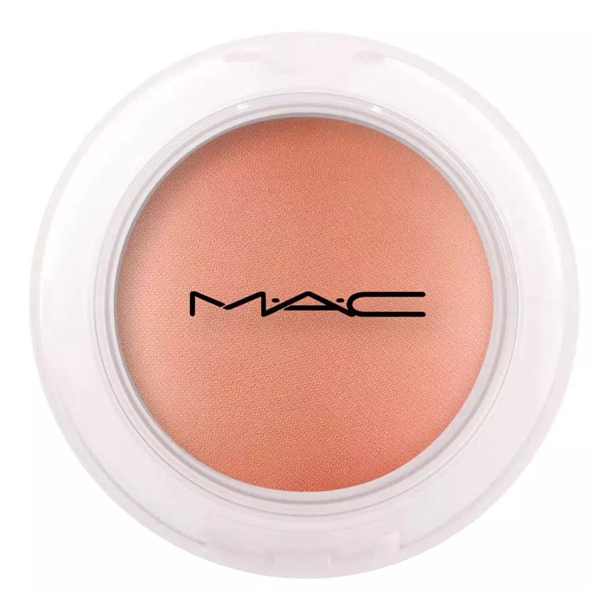

Produtos |
Descrição |
Comprar |
|---|---|---|
Um toque aveludado à sua pele. Super resistente e com uma cobertura incrível, a base Cover Up permite a construção de camadas. Com uma fórmula leve e respirável, ela uniformiza a aparência da pele para um acabamento matte incrível. |
Comprar Agora! | |
O Kit Real Techniques Everyday Essentials traz tudo o que precisa para criar uma make perfeita. Seus itens criam cobertura e esfumam os produtos para deixar um acabamento uniforme e natural. |
Comprar Agora! | |
|  | M·A·C Sheertone Shimmer se espalha facilmente sobre as maçãs do rosto de forma que o tom do blush fique uniforme o dia todo com suas cores consistentes e reais para uma maquiagem radiante e discreta. |
Comprar Agora! |
O Corretivo Makiê foi desenvolvido com cores, textura e densidade baseadas nos tons de pele e clima tropical. Disponível em diversas tonalidades, que se fundem quando aplicadas e esfumadas. Em testes, foi aprovado para resistir a climas quentes, câmera, luz, uso profissional em ambientes de estúdio e longas filmagens, inclusive filmagens aquáticas. |
Comprar Agora! |